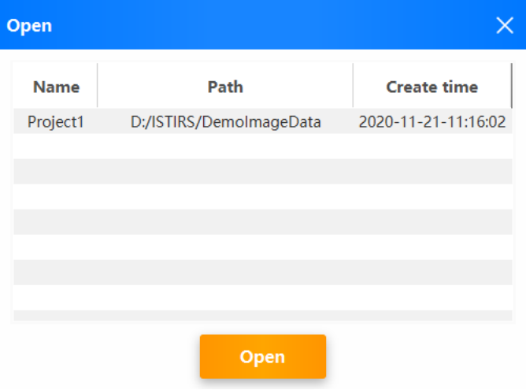
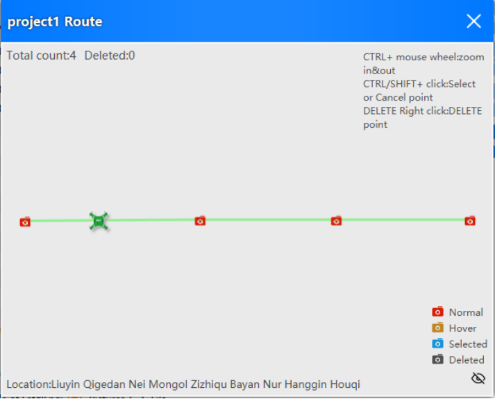
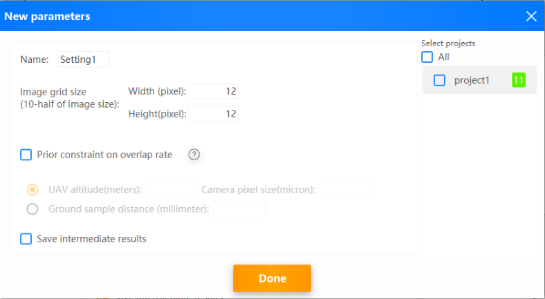
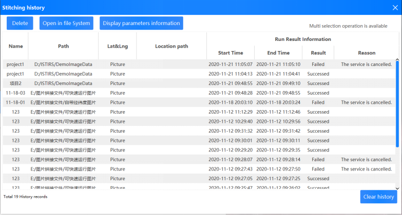

Help Documentation
Catalogue
Start >> Projects >> Settings >> Stitching >> History >> Other
A. Start
1£®Language
The software can be switched to simplified Chinese and English versions.

2£®Create a project
Click “New” or drag from system File Manager into the image folder that you want to stitch.

- Enter the project name, select the image path to be stitched, and enter the latitude and longitude data.
- Note: There are two ways to input latitude and longitude data:
1.Input latitude and longitude data from the image: The image is required to carry latitude and longitude data.
2.Enter longitude and latitude data from the file: TXT or Tetracam flight log file.
TXT file format is :(image name, latitude, longitude, height).
Example: DJI_0006. JPG, 36.8284518611111, 116.570739083333, 118.
3£®Open a project
- Click "Open" to reopen the previously created project.

After the above two methods, we have successfully imported the project to be spliced. Next, let's take a look at the details of the project.
B. Projects
1. Projects
The software supports importing multiple projects for sequential stitching to save you time.

- Click “New”or drag from system File Manager into the image folder that you want to stitch.
- Click “Open”to import the previously created project.
- Click "Remove" to remove the selected project from this stitching.
- Click "Detail" to view project details.
2. Detail of project

- Double-click the list or click“open”to view the selected image.
- Clicking on the list to displays the contents of the corresponding image.
- Click "Remove" or press DELETE to remove the selected image from this project, that is, the selected image does not participate in this stitching.
- Click “Recall”to rejoin the project with the selected image.
- After holding down CTRL or SHIFT, click on the list to select multiple.
- Modify project information.
Don't worry, the list of pictures isn't intuitive. We've taken it into account.According to the latitude and longitude data of the picture, the flight path is plotted.So let's see how intuitive this is.
3. Route
Click on "Route" to view the visualized flight path of the UAV.
Visually understand the flight path and shooting location of the UAV by means of visualization.

- Click "Record Point" to view an image of this record point.
- After holding down CTRL or SHIFT, click "Record Point" to select multiple options.
- Right click "record point" and click "DELETE" or press "DELETE" to remove the corresponding image of the selected "record point" from this stitching.
- Of course, it's worth knowing that flight path data can be interacted with the list of image data in the previous page, so go ahead and give it a try!
Now that the project is configured, let's configure the parameters needed for stitching!
C. Settings
Each item can have its own set of parameters, and in the subsequent stitching, each item will use its own corresponding parameters to stitch the image.
1£®Set the project parameters separately

- After entering the parameters, click "Save" to set the configuration of the selected parameters separately.
Of course, isn't it a little tedious to set it up separately?Don't worry, we've thoughtfully designed "parameter templates" that will be saved on your computer and will be there the next time you use them ~ and you can batch them to your project.
Let's take a look at how parameter templates work!
2£®Parameter templates
Click “Add parameter set”

- Once you have configured the parameters, select the items in the right list that you want to take this set of parameters.
- We can also double-click the Parameter Set list to modify it again.
The parameters are configured, so let's start stitching the project!
D. Stitching
Click "Start" to enter the stitching page.
1£®Running
The software concatenates selected items sequentially. Wait a moment please...
During this period, we can relax our eyes, check the corresponding parameters of the project, or cancel a project.

2£®Success
After the item is successfully stitched, it moves to the stitched completion list.


Successfully stitched image
Let's take a look at the successful stitching results!
- Click "Final Results" to open the Mosaic result image directly.
- Click "Mid Results" to open the folder that holds the intermediate data saved in the stitching.
- Click "Reset&Start". We can modify the parameters and stitch the project again.
- Click  to open the folders.
to open the folders.
3£®Failed
Of course, project stitching may fail due to parameters, stitching images and other reasons.
In the stitching failure list, we can get the reasons for the failure of the project. After knowing the reasons for failure, we can adjust the project or parameters according to the reasons for error reporting.

- Click "Parameter" to view the parameters.
- Click "Reset & Start" to adjust the parameters and stitch the project again.
So far, we've succeeded in getting the results of the stitching project.
The software will also kindly save the stitching results and other stitching information to the local, we can check the stitching history at any time.
Next, let's look at the stitching history feature.
E. Stitching history
As you may have noticed, there is a button in the upper right corner of the software. Clicking on it will bring up the "History" page.

- In this page you can view all the stitching history.You can view project information, view parameter information, view failure reasons, and view stitching results.
- Click “Delete” to delete the selected history.
- Click "Open in file System" or double-click the list to open the stitching results folder.
F. Other
When you have questions about a button, a text message, etc., you can put the mouse over it for a while, which may be helpful to you.